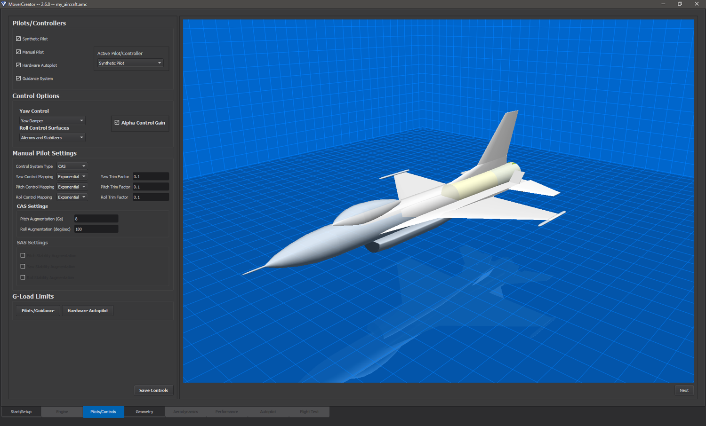
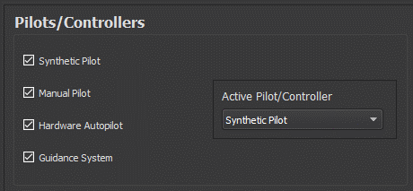
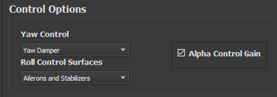
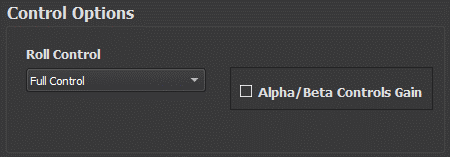
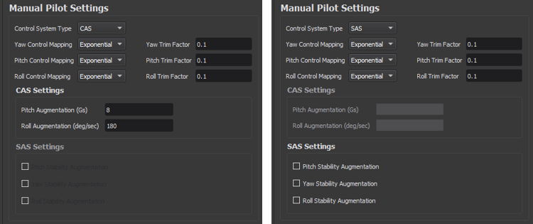
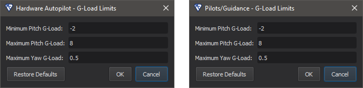

Pilots/Controls¶
Note
This page is disabled for vehicles with a cNO_CONTROL configuration.
Note
This page is disabled if only a Guided Mover is being generated.
When the user navigates to the Pilots/Controls page they are presented with two separate areas of interaction. On the left side the user defines available pilots and control options for the vehicle. On the right side they are presented with a 3D representation of the vehicle as defined by the file loaded in. The Pilots/Controls tab is shown in the image below
Pilot Types/Controllers¶
The vehicle can have up to four pilots/controllers available for it. In this section the user selects which pilot types and/or controller he or she wishes to be configured for the vehicle. The user does so by checking the box next to each pilot/controller he or she wishes to include. Available pilots/controllers are:
Synthetic Pilot
Manual Pilot
Hardware Pilot
Guidance System
As the user checks or unchecks pilots/controllers they are dynamically added/removed from the Active Pilot/Controller combo box. The user can select which pilot/controller he or she wishes to be the active one by choosing it from the drop-down menu.
Control Options¶
The control options available are dependent on the type of vehicle the user is working with.
Aircraft¶
For aircraft, users can select which surfaces handle roll control as well as the yaw control mode.
Options for Roll Control Surfaces are:
Ailerons Only
Stabilizers Only
Ailerons and Stabilizers
Options for Yaw Control are:
Yaw Damper
None
The user can also check whether or not to enable Alpha Control Gain by checking the box (shown below)
Weapons¶
The control options available for weapons are different from aircraft. For a weapon the user can choose the vehicle’s method of Roll Control.
Options for Roll Control are:
Full Control
Roll Control
None
The user can also select whether or not to enable Alpha/Beta Controls Gain by checking the box (see image below)
Manual Pilot Settings¶
If the user selects Manual Pilot in the Pilots/Controllers section of the page the Manual Pilot Settings section of the Pilots/Controls page becomes enabled. Within this section the user can select the Control System Type. Options available under Control System Type are:
SAS
CAS
Direct
If the user selects CAS as the Control System Type the CAS Settings section becomes enabled and the user can change the Pitch Augmentation and Roll Augmentation values for the system. If SAS is selected, the user can select which channels (pitch, yaw, roll) will be augmented in the SAS Settings section. Other options available for modification within this section include Yaw Control Mapping, Pitch Control Mapping, and Roll Control Mapping. Options available from these orientation mappings are:
Linear
Exponential
The user can also set the trim factor for each of these orientations (yaw, pitch and roll). See the image below.
G-Load Limits¶
Note
These settings may also be set in the Autopilot page.
This section allows the user to specify the g-load limits. Once either the “Pilots/Guidance” or “Hardware Autopilot” button is pressed, a dialog will appear where the user can enter the desired values as shown below.
Editing these values is equivalent to changing pitch_gload_min, pitch_gload_max, and yaw_gload_max, respectively.